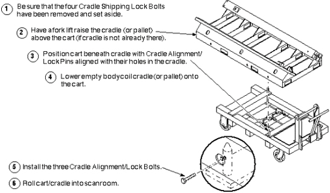
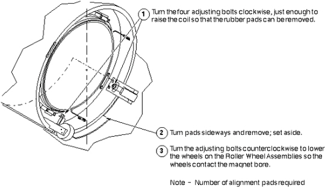
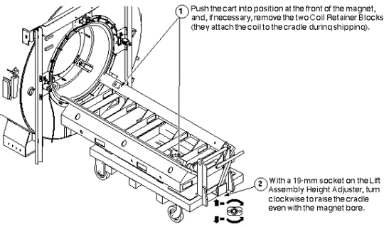
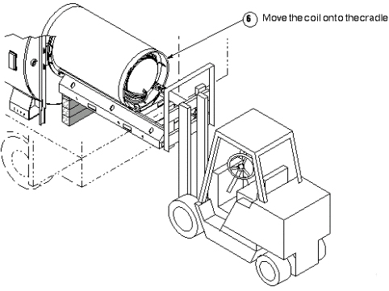

Operating Documentation
Direction 5133315-3, Rev# 14
Signa EXCITE HD 1.5T Service Methods
Module Version 1.0, Version Date 5/3/07
Operating Documentation |
| Required Persons | Preliminary Reqs | Procedure | Finalization |
|---|---|---|---|
| 4 minumum | Not Applicable | Not Applicable | Not Applicable |
The gradient body coil is now completely disconnected. At this point, you may follow either of two procedures:
If the RF Body Coil is operational, it must be removed for later installation in the replacement gradient coil. In this case, go to FAILED GRADIENT BODY COIL REMOVAL, Step 1 in Section 4.1 below,
OR
If the RF Body Coil is to be replaced along with the gradient coil, go on to Replacement Coil Installation.
For more information see Gradient Coil Replacement Introduction
| NOTE: | Number of rubber pads required - Save the rubber pads for use under replacement coil. GE magnets having resistive shim coils require two 6.5-mm-thick pads (2126201), one at each end of bore. Magnets having no resistive shim coils require the same two pads, PLUS three 9.5-mm-thick pads (2135234) at each end. Oxford magnets require two 9.5-mm-thick pads under each end. |
| Item | Qty | Effectivity | Part# | Manufacturer | |
|---|---|---|---|---|---|
| Epoxy-filled Gradient Coil cart (2134810), cradle (2134810-2), and accessory kit (2134810-4). | 1 | - | 2144093 | - | |
| Class 1 electric rider lift truck, 4-wheel, rated at 6000 lbs (in case the coil, cart, and cradle must all be lifted together— a necessity in mobiles); with forks a minimum of 56 inches long; with side shifter for easy width adjustment and lateral movement of forks. | 1 | - | n/a | - | |
| Non-magnetic tool kit | 1 | - | 46-320273G1, G2, G3, or G4 | - | |
| Nylon Tracks (P/N), which are 1/4-inch thick, one inch wide, and 60 inches long. In each end of the track are two holes; one is smooth and goes all the way through, and the other is threaded and goes partially through. Two tracks come with each replacement Epoxy-filled Combined Gradient Coil. | 2 | - | - | - | |
| 12-inch length of 1/2-inch I.D. hose | 1 | - | - | - | |
| 2 hose clamps for 1-inch O.D. hose | 1 | - | - | - | |
| 4-inch-long piece of copper tubing, 1/2-inch O.D. | 1 | - | - | - | |
| Roll of paper toweling | 1 | - | - | - | |
| Pair of latex gloves | (optional) | - | - | - | |
| Non-magnetic torpedo level or similar | 1 | - | - | - | |
| ||||
| PERSONAL INJURY POSSIBILITY! | ||||
| WHEN REMOVING OR REPLACING THE RUBBER PADS THAT ARE LOCATED BENEATH THE BODY COIL, DO SO WITHOUT PUTTING YOUR FINGERS BETWEEN THE COIL AND THE MAGNET BORE. | ||||
| SERIOUS INJURY CAN OCCUR IF THE COIL SHOULD SUDDENLY SHIFT POSITION WITHIN THE BORE. |
| ||||
| Personal injury/equipment damage possibility. | ||||
| The combination of the coil, cradle, and cart weighs almost 3300 pounds (~1230 kg). | ||||
| To avoid personal injury and/or equipment damage, and to maintain complete control over this amount of weight, a minimum of four people must be used to move the combination. |
| ||||
| POSSIBLE PERSONAL INJURY AND/OR EQUIPMENT DAMAGE! | ||||
| NOT HAVING THE CRADLE ANCHORED TO THE CART COULD CAUSE THE CRADLE TO TIP WHEN THE COIL MOVES ONTO IT. | ||||
| THE THREE CRADLE ALIGNMENT/LOCK BOLTS MUST BE IN PLACE BEFORE THE COIL IS ROLLED ONTO THE CART. |
| Condition | Reference | Effectivity |
|---|---|---|
Verify that the Epoxy-filled Gradient Coil accessory kit contains all the parts listed in Kit Contents. | - | - |
- | - | |
- | - | |
- | - | |
- | - |
RF power and DD Board Bias cables shall have already been disconnected in previous steps; ends should be taped to inside of coil.
| NOTE: | Handling the RF body coil - While it is possible for two people to move an RF body coil with reasonable ease, use three people for this procedure. |
| NOTE: | Removal of RF body coil in mobiles - If the RF body coil is operational, and is to be set aside, it is generally possible to remove it from the front or the rear of the magnet in a mobile van (as opposed to the gradient coil having to be changed only through the rear door of the van). The choice is yours, based on space available (for setting the RF coil aside, preferably inside the van), and the ease and convenience of movement around the magnet itself. Either way, you should have three people available to do it. |
This procedure requires three people. It also requires two nylon tracks (P/N), which are 1/4-inch thick, one inch wide, and 60 inches long. In each end of the track are two holes; one is smooth and goes all the way through, and the other is threaded and goes partially through. Two tracks come with each replacement Epoxy-filled Combined Gradient Coil.
The three parts steps below show all of the necessary steps for removing the RF body coil.
Placing the RF Body Coil Installation Tracks
Illustration 1: PLACING THE RF BODY COIL INSTALLATION TRACKS

Attaching the RF Body Coil Installation Tracks
Illustration 2: ATTACHING THE RF BODY COIL INSTALLATION TRACKS

Removing the RF Body Coil From the Gradient Coil
Illustration 3: REMOVING THE RF BODY COIL FROM THE GRADIENT COIL

| NOTE: | Making more room for the tracks - If the fit between the RF and gradient body coils seems tight, consider turning the four upper bolts clockwise a few turns to raise the RF coil slightly, allowing a bit more room to slide the tracks through. |
Go on to Using the Coil Cradle and Cart- Using the Coil Cradle and Cart.
The Epoxy-filled Gradient Coil cradle and cart are used to install and
remove the Epoxy-filled Gradient Coil (with or without the RF body coil) at
the magnet. The components are called out in Illustration 4 look them over carefully. It may be helpful, also, to refer
to Service Note 60880  , for more information on using the Gradient
Coil Cart.
, for more information on using the Gradient
Coil Cart.
Illustration 4: GRADIENT BODY COIL CRADLE & CART NOMENCLATURE

| ||||
| Personal injury/equipment damage possibility. | ||||
| The combination of the coil, cradle, and cart weighs almost 3300 pounds (~1230 kg). | ||||
| To avoid personal injury and/or equipment damage, and to maintain complete control over this amount of weight, a minimum of four people must be used to move the combination. |
| ||||
| Possible personal injury and equipment damage! | ||||
| Not having the cradle anchored to the cart could cause the coil/cradle to tip. | ||||
| The three cradle alignment/lock bolts MUST be in place before the coil is rolled onto the cart. |
| ||||
| EQUIPMENT DAMAGE HAZARD! DO NOT USE THE PATIENT TABLE TO SUPPORT OR TRANSPORT THE GRADIENT COIL. THE PATIENT TABLE IS RATED AT 300 LBS (136 KG). THE GRADIENT COIL WEIGHS APPROXIMATELY 3.5 TIMES THE RATING OF THE PATIENT TABLE. USING THE TABLE TO SUPPORT THE GRADIENT COIL IS LIKELY TO DAMAGE IT STRUCTURALLY. | ||||
Moving the almost 3300 pounds of the combined coil, cradle, and cart requires a minimum of four people; therefore, follow the steps below to prevent damage to the equipment, and for the safety of those using that equipment.
The next steps that prepare the empty cradle and cart to receive the failed body coil.
Illustration 5: PREPARE THE CART AND CRADLE

See Illustration 6 for the steps to assembling the Roller Wheel Assemblies, and mounting them on the failed coil.
Illustration 6: MOUNTING THE ROLLER WHEEL ASSEMBLIES

| NOTE: | Roller wheel and axle positioning - In most cases, the axle/wheel combination is positioned in the higher of the two holes in the wheel housing (higher being relative to a side view of the housing). The lower hole is used for placement of body coils in magnets that have no resistive shim coils (This magnet bore is larger in diameter; therefore, the body coil must sit higher in the bore). |
| ||||
| PERSONAL INJURY POSSIBILITY! | ||||
| WHEN REMOVING OR REPLACING THE RUBBER PADS THAT ARE LOCATED BENEATH THE BODY COIL, DO SO WITHOUT PUTTING YOUR FINGERS BETWEEN THE COIL AND THE MAGNET BORE. | ||||
| SERIOUS INJURY CAN OCCUR IF THE COIL SHOULD SUDDENLY SHIFT POSITION WITHIN THE BORE. |
Illustration 7 shows how to remove the rubber pads.
Illustration 7: REMOVING THE RUBBER PADS

| NOTE: | Number of rubber pads required - Save the rubber pads for use under replacement coil. GE magnets having resistive shim coils require two 6.5-mm-thick pads (2126201), one at each end of bore. Magnets having no resistive shim coils require the same two pads, PLUS three 9.5-mm-thick pads (2135234) at each end. Oxford magnets require two 9.5-mm-thick pads under each end. |
| ||||
| POSSIBLE PERSONAL INJURY AND/OR EQUIPMENT DAMAGE! | ||||
| NOT HAVING THE CRADLE ANCHORED TO THE CART COULD CAUSE THE CRADLE TO TIP WHEN THE COIL MOVES ONTO IT. | ||||
| THE THREE CRADLE ALIGNMENT/LOCK BOLTS MUST BE IN PLACE BEFORE THE COIL IS ROLLED ONTO THE CART. |
| ||||
| Equipment damage possibility. Early carts had left-hand threads on the
Lift Assembly Height Adjuster, i.e., clockwise rotation lowered the assembly,
and counterclockwise rotation raised it. Gradually, these carts are being
modified for right-hand threads. Be sure to check the cart that you are about
to use. Damage to the mechanism can occur if the bolt is turned the wrong
way with the full weight of a coil and cradle on it. (also see | ||||
See the two-part Illustration 8 for steps necessary for placing the empty cradle/cart at the magnet, and loading the failed coil on it.
Illustration 8: POSITIONING THE EMPTY CRADLE AND CART

Overview
There are several possibilities for changing the gradient body coil in the various mobile configurations, and all differ significantly from fixed sites. The standard, or true, mobile van, and the European version, called the Eurovan, both require the coil to be replaced via the rear door. It would be ideal to make the change with the trailer backed up to a loading dock, to avoid dealing with the rear steps of the van.
Gradient body coils in transportables and relocatables must be replaced via the overhead side door, but the floor must be temporarily reinforced with 3/4-inch plywood; only the floor immediately below the magnet is strong enough to support the combined weight of the coil/cradle/cart combination. The patient lift in transportables also cannot support that combination, so a lift truck must be used to place it inside the side door.
In some standard mobile vans (including Calumet Coach), the coil/cradle/cart combination can be wheeled through the rear door. In others, including Ellis & Watts and the Eurovans, it cannot; a lift truck is needed to lift the replacement coil/cradle through the door. The limited space behind the magnet might make positioning the cart difficult, especially if you are not at a loading dock; therefore, it may be easier, in every instance, to skip using the cart, and just have the lift truck place the coil and cradle into the van.
The dimensions to use as a guideline for whether or not to use the cart are: total length of coil on cradle is 84 inches (2134 mm); total length of coil and cradle resting on the cart is 94.5 inches (2400 mm). For additional dimensions, see Illustration 9.
Illustration 9: GRADIENT COIL, CRADLE, AND CART DIMENSIONS

The following procedure assumes that the gradient coil is situated in a van where the cart cannot be wheeled through the rear door, and, therefore, must be placed by the lift truck. The procedure further assumes that the failed coil has been completely disconnected, and that, if the RF body coil is still operational, it has been removed and set aside.
Removing the Failed Gradient Body Coil
The fork lift truck that is used for this procedure should be rated for 6000 pounds (2700 kg), and should be capable of lateral movement of the forks; left to right, as well as forward and reverse. It should also be able to tilt the forks up and down (all for the ease of getting the replacement coil properly aligned for movement into the bore).
Prepare Lift Truck Aid
It will be easier for the lift truck driver, and more efficient for the whole operation, if you stack some wood right up against the rear face of the magnet. This provides a place for the driver to rest the far end of the crate (still on the forks, of course!).
It takes whatever wood is on hand to make 30-inch long (minimum) pieces that can be horizontally stacked to a height of approximately 21 inches. Two pieces of 8x8 wood, and three pieces of 2x6 or 2x4 wood come quite close. See Illustration 10.
Illustration 10: STACK WOOD TO SUPPORT COIL & CRADLE

When the driver rests the front edge of the cradle, or wooden pallet, on the wood, the surface of the cradle or pallet that the coil rests on should be very close to the correct height for moving coils in and out of the bore. The wood helps stabilize the far end of the forks and their load.
Picking up the Load
Illustration 11 shows the differences in changing gradient coils in a mobile:
Forks are placed in end slots of cradle or pallet (rather than crosswise).
The six gradient leads are always loaded closest to the driver (remember, you are working at the rear of the magnet).
The Coil Retainer Blocks get moved to the end of the cradle closest to the driver.
Illustration 11: LIFT DRIVER GETS EMPTY CRADLE

Empty Cradle Supported by Wood Stack.
Illustration 12: EMPTY CRADLE SUPPORTED BY WOOD STACK

Failed Coil Rolled Onto Cradle
Illustration 13: FAILED COIL ROLLED ONTO CRADLE

Failed Coil Ready for Return Shipment
Illustration 14: FAILED COIL READY FOR RETURN SHIPMENT

No finalization steps.